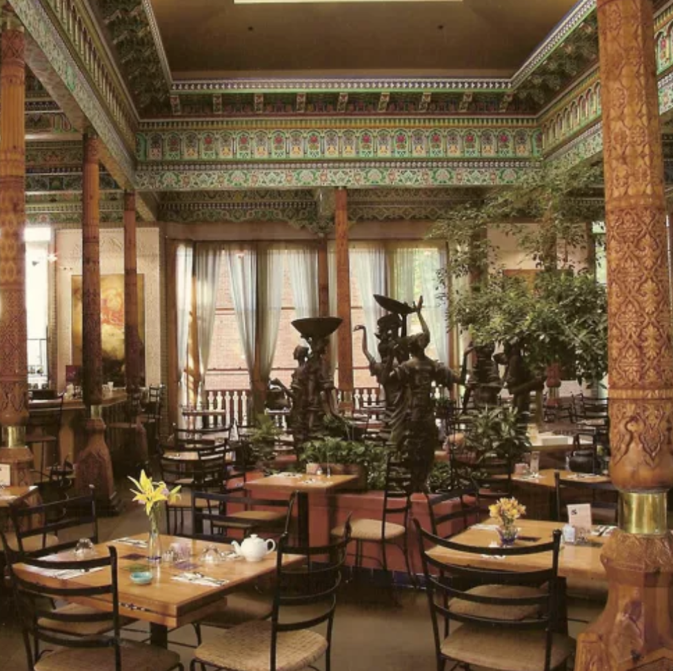
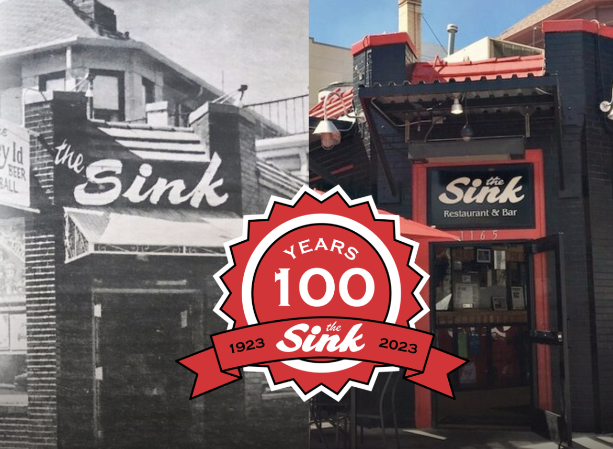
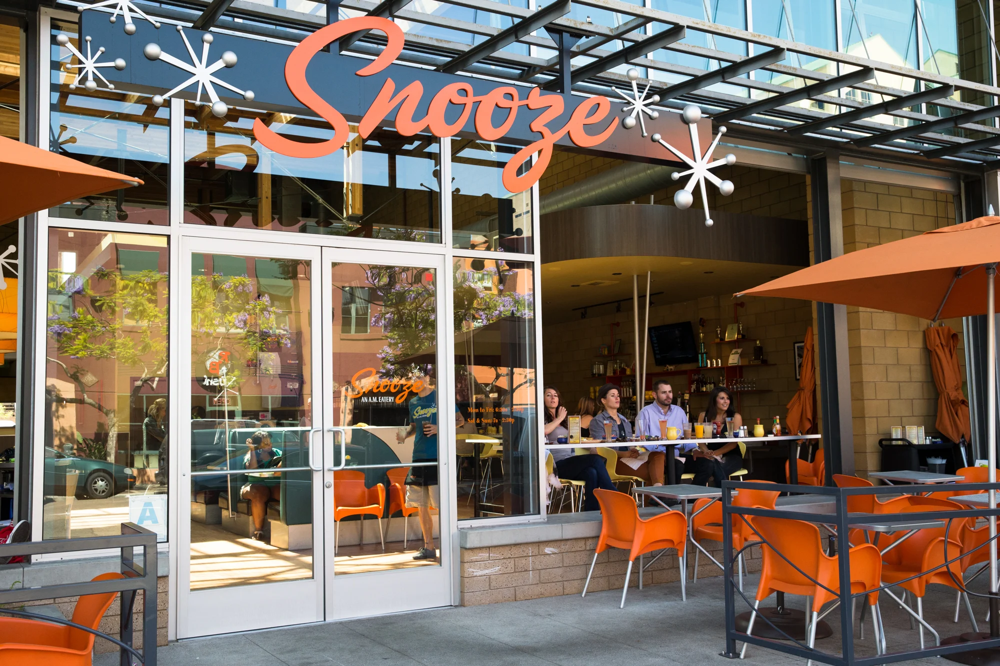
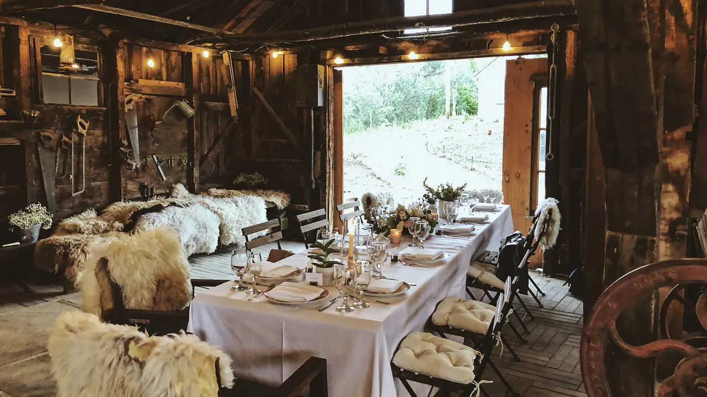

Boulder Dushanbe Tea House
1770 13th St, Boulder, CO 80302
A gift from Boulder's sister city, Dushanbe, Tajikistan, this hand-crafted teahouse is a work of art — literally. Shipped piece by piece and assembled in the heart of downtown, it's a mosaic of carved wood, painted ceilings, and global flavors.
Visit Website

The Sink
1165 13th St, Boulder, CO 80302
The Sink isn't just a local favorite — it's a Boulder landmark with stories splashed across every inch of its graffiti-covered walls. Flavor, history, and heart in every bite.
Visit Website

Snooze, an A.M. Eatery
1617 Pearl St, Boulder, CO 80302
Trendy brunch spot with creative breakfast dishes. Great for families and weekend travelers.
Visit Website

Black Cat Bistro
1964 13th St, Boulder, CO 80302
A farm-to-table bistro offering seasonal dishes and a cozy atmosphere.
Visit Website